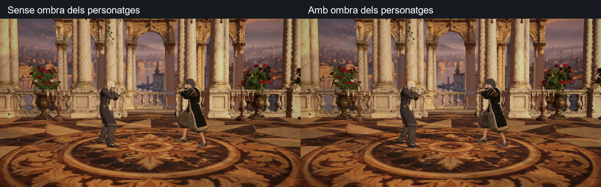
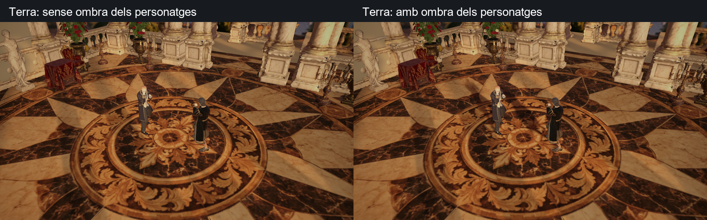
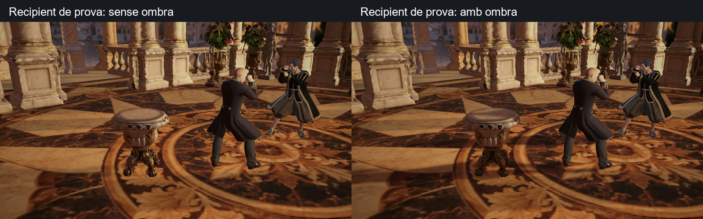
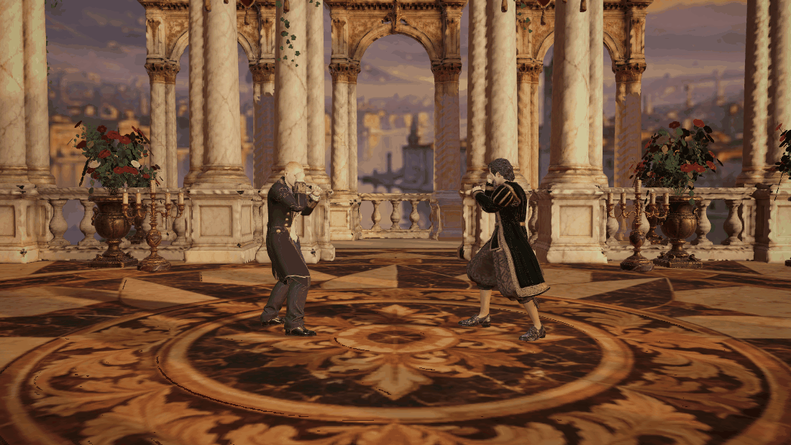

Captures natives de Unity, amb els avatars del joc. Les comparatives mantenen la mateixa llum i només desactiven/activen la projecció d’ombra dels personatges.



Recipient existent afegit només a la prova per comprovar la recepció de l’ombra. No s’ha afegit a l’escenari de producció.

Desplaçament de diagnòstic amb la postura congelada; no és una seqüència de combat.

Un focus amb projecció restringida als personatges. Mid: mapa de 512 px; HighMid/High/Ultra: 1024 px. Low: contacte suau simplificat. Aplicat a les 15 escenes Monteverdi i als tres prefabs mestres. Es conserva el bake previ del pilot (2 lightmaps, 255 probes i AO); aquesta prova no recalcula el bake ni afegeix AO en temps real. Rendiment en mòbil pendent de mesurar.